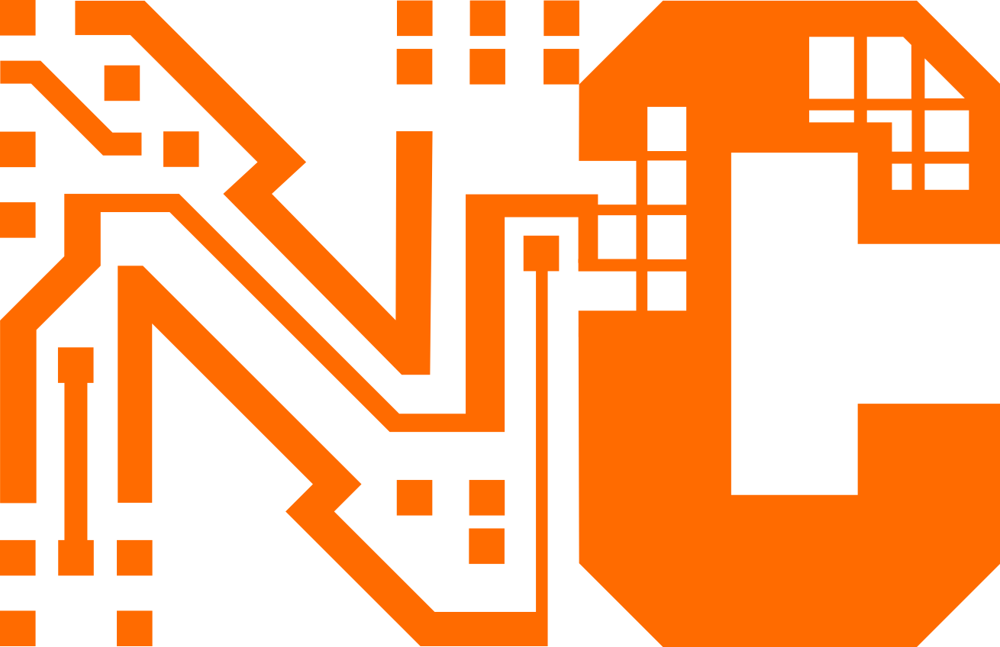

01
Waveform logic
Values are not bare scalars. A waveform carries frequency, amplitude, phase, and shape as first-class structure.

Machine-native programming
New Code is a language for human-AI collaboration where humans declare intent, constraints, and invariants, and the compiler synthesizes the implementation.

Constraint-based language
Execution expressed as waveform logic, process unfolding, and entanglement.fn amplify (signal : 𝕎, gain : ℝ) → 𝕎
intent: "scale the amplitude of signal by gain"
forbid: "do not modify phase"
ensure: "output shape equals input shape"
≔ ??The language model
01
Values are not bare scalars. A waveform carries frequency, amplitude, phase, and shape as first-class structure.
02
Humans write what the function should do, forbid, and guarantee. The compiler fills the body.
03
Programs unfold over time. Debugging is sampling trajectories, not stepping through imperative instructions.
04
Coupled values stay structurally linked through declared propagation, instead of depending on ad hoc synchronization.
Why now
Traditional programming languages were optimized for humans reading and writing instructions directly. New Code starts from a different assumption: the primary reader and writer is an AI system with more context, more range, and different constraints.
Humans define the score. The system performs it.
Prototype system
The current implementation includes the 𝕎 primitive, parser, process runtime, entanglement, compiler path, REPL, debugger, and language server.
Processes render as timelines, realisations evolve live, and entanglement flashes when propagation fires.
Deterministic intent matching works without keys. The AI-backed compiler adds broader synthesis with AST-level safety checks.
Syntax highlighting, diagnostics, completions, hover data, and document symbols already ship through the LSP and VS Code extension.
Core expression
Programs unfold instead of run.
Scalar reduction is explicit, visible, and lossy.
Similarity is structural, not just numeric.
Read next
The full design principles, execution model, primitives, operators, and open problems.
Guide The conductor's guideThe practical walkthrough for writing scores, intent blocks, processes, and entanglements.
Prototype Implementation overviewThe current system, feature set, architecture, debugger, REPL workflow, and next steps.